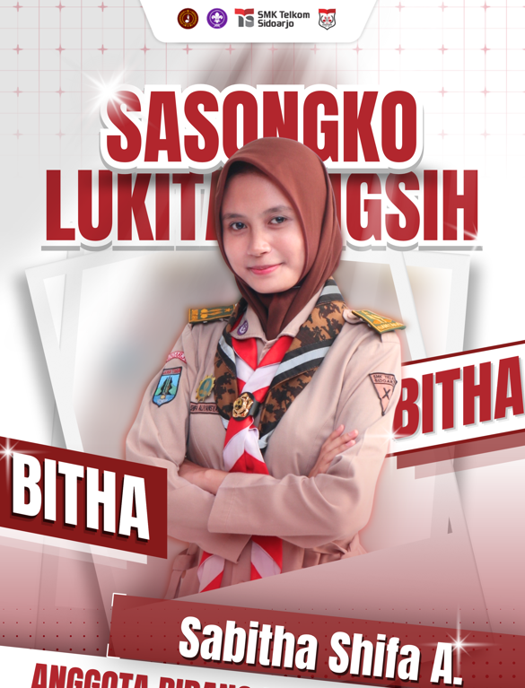
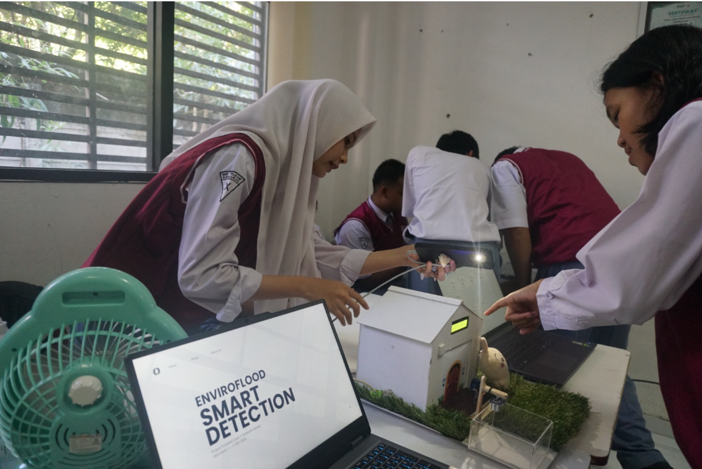
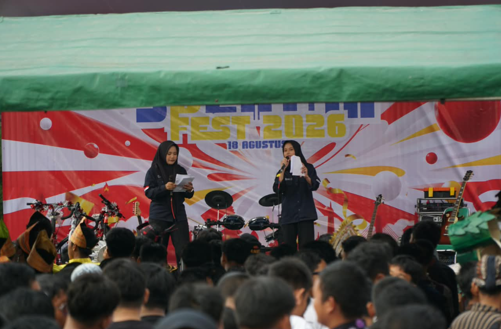
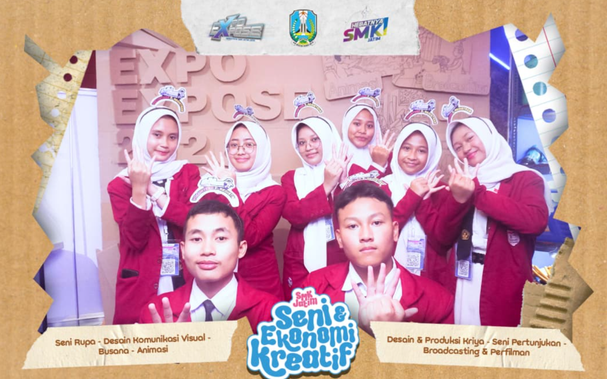
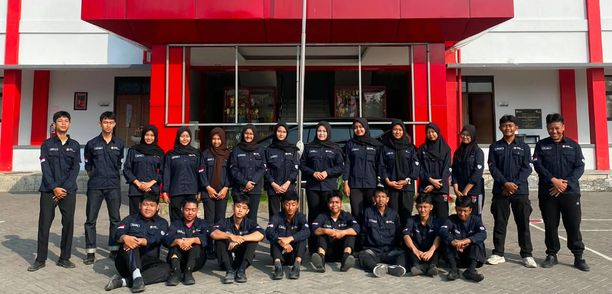
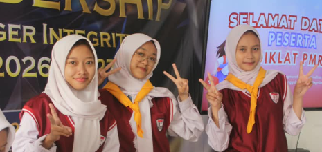
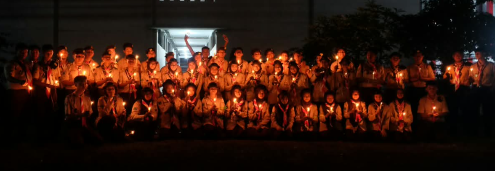

Hello, I'm
Student of Teknik Jaringan Akses Telekomunikasi who is interested in web development, networking, and technology.
My Projects OrganitationSaya adalah seorang siswa Teknik Jaringan Akses Telekomunikasi yang memiliki ketertarikan pada teknologi, pemrograman, jaringan komputer, dan pengembangan website. Saat ini saya terus mengembangkan kemampuan melalui pembelajaran di sekolah, berbagai project, serta kegiatan organisasi. Saya senang mempelajari hal baru dan mencoba menerapkannya dalam project yang dapat memberikan pengalaman secara langsung.
Sebagai siswa yang sedang mendalami bidang teknologi, saya memiliki ketertarikan pada pengembangan website, jaringan komputer, dan Internet of Things (IoT). Beberapa bidang dan teknologi yang sedang saya pelajari meliputi:
HTML, CSS, JavaScript, Tailwind CSS, dan Bootstrap.
Python dan dasar pemrograman.
Jaringan komputer, VLAN, VLSM, dan konfigurasi jaringan.
ESP32, sensor, monitoring system, dan integrasi perangkat.
Visual Studio Code, GitHub, dan berbagai tools pendukung pembelajaran.
Selain mengembangkan kemampuan di bidang teknologi, saya juga aktif mengikuti berbagai kegiatan sekolah dan organisasi. Saya memiliki pengalaman dalam kegiatan OSIS, PMR, Dewan Ambalan, volunteer, serta menjadi Master of Ceremony (MC). Berbagai kegiatan tersebut membantu saya mengembangkan kemampuan komunikasi, kerja sama tim, kepemimpinan, tanggung jawab, dan manajemen kegiatan.

Project IoT untuk mendeteksi ketinggian air dan memberikan peringatan ketika terjadi kondisi banjir.
ESP32 • IoT • Flask

Berperan sebagai pembawa acara dalam kegiatan sekolah maupun organisasi, menjaga alur acara tetap lancar dan suasana tetap hidup.
Public Speaking • Event Hosting

Aktif sebagai relawan dalam kegiatan sosial dan kemanusiaan, berkontribusi nyata melalui kerja sama tim dan kepedulian terhadap masyarakat.
Community Service • Teamwork

Aktif menyelenggarakan berbagai kegiatan sekolah seperti lomba, seminar, peringatan hari besar, serta program kreatif untuk meningkatkan partisipasi siswa.
Periode 2026

Rutin melakukan pelatihan pertolongan pertama, donor darah, bakti sosial, dan kesiapsiagaan bencana untuk menumbuhkan kepedulian dan jiwa kemanusiaan.
Periode 2025-2026

Mengadakan latihan pramuka, perkemahan, bakti masyarakat, serta kegiatan kepemimpinan untuk membentuk karakter disiplin dan mandiri.
Periode 2025-2026
Email
shifaaliyansyahs@gmail.com
Instagram
@bbitaaaw
TikTok
@bbitaaaw